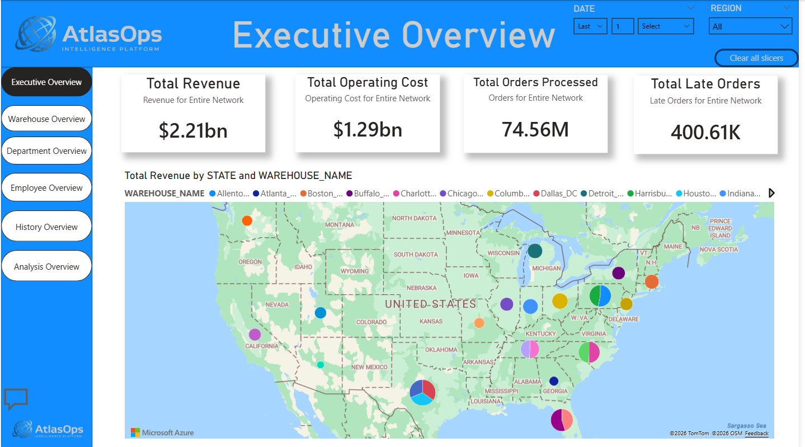
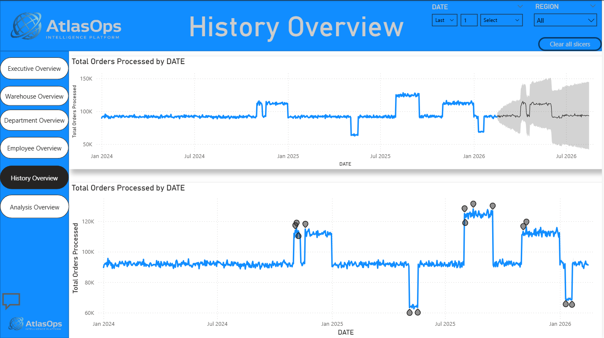
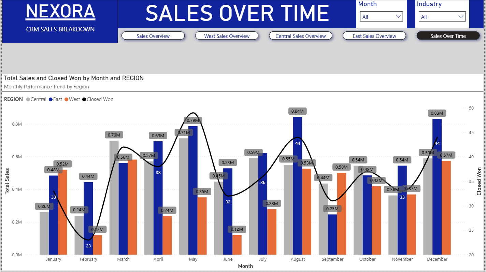

About Me
I’m a Business Intelligence & Analytics professional focused on turning raw data into structured insights that drive operational and strategic decisions. My work bridges the gap between data architecture, analytical modeling, and business storytelling.
I design and implement end-to-end analytics systems starting with data ingestion and modeling, and ending with dashboards and forecasts that empower leaders to identify performance drivers, optimize processes, and plan with confidence.
My approach combines cloud data platforms, robust SQL modeling, and business-centric visualization to deliver actionable intelligence across executive, departmental, and individual performance layers.
Projects
AtlasOps Intelligence Platform
An end-to-end cloud analytics platform built to simulate enterprise operational intelligence across multiple U.S. regions. Architected using Azure Blob, Snowflake (star schema modeling), and Power BI — delivered as a structured Power BI Service App.
- Cloud ingestion → transformation → reporting architecture
- Star schema modeling (fact & dimension design)
- Multi-layer reporting strategy
- Forecast integration for operational planning


Nexora Sales Analytics Platform
End-to-end CRM analytics built to simulate executive sales intelligence for a SaaS business. Modeled in Snowflake using a star schema (including stage history) and delivered through interactive Power BI dashboards for revenue, funnel conversion, and regional performance.
Business Objective
- Create a single source of truth for revenue, conversion, and sales efficiency.
- Reveal funnel drop-off by stage and identify where deals are lost.
- Compare region performance (East/Central/West) and surface drivers.
- Measure rep and lead-source contribution to closed revenue.
Key Insights
- Regional performance differences were driven by conversion + cycle time, not just lead volume.
- Funnel drop-off was highest at the negotiation stage, indicating process risk late in the cycle.
- Partnerships and LinkedIn outperformed other sources in conversion and revenue contribution.


E-Commerce Operations Analytics
End-to-end operations analytics project analyzing customer orders, products, returns, inventory, and shipments. Built from raw CSVs through a cleaned relational database and delivered via an interactive Power BI dashboard to surface revenue drivers, return behavior, and shipping performance.
Business Objective
- Build a reliable dataset from multiple raw operational CSVs (customers, orders, items, returns, inventory, shipments).
- Create a single source of truth in SQL to answer revenue, return-rate, and fulfillment efficiency questions.
- Identify top revenue categories/products, repeat customers, and delivery performance by carrier/warehouse.
- Deliver stakeholder-ready insights and recommendations through Power BI.
Key Insights
- Electronics and Sports were primary revenue drivers, while some high-unit categories contributed lower revenue due to price point.
- Return behavior was measurable and trackable by category/product, enabling targeted process improvements.
- Delivery performance varied by carrier/warehouse, highlighting opportunities to optimize fulfillment and reduce late deliveries.
Architecture

Skills & Technologies
Data Engineering & Modeling
- Star Schema Design & Fact/Dimension Modeling
- SQL (Analytical querying, CTEs, window functions)
- Cloud Data Platforms (Snowflake, Azure Blob Storage)
- Data Cleaning & Transformation
Business Intelligence & Visualization
- Power BI (Semantic Modeling, DAX, App Publishing)
- KPI Definition & Executive Dashboards
- Forecasting & Trend Analysis
- Interactive Drill-downs & Storytelling
Analytics Workflow
- End-to-End Analytics Projects
- Insight Synthesis & Recommendations
- Problem Framing with Business Outcomes
- Cross-Functional Stakeholder Alignment
Certifications
Google IT Support Certificate
Covered networking, troubleshooting, Linux systems, and foundational IT concepts. This certification strengthened my understanding of infrastructure, system behavior, and production data environments — supporting my work with cloud data platforms and analytics architecture.
Completed October 29, 2025
Issued by Coursera & Google Career Certificates
Contact
Email: jaylundharris@gmail.com
LinkedIn: linkedin.com/in/jaylund-harris-571936384/
GitHub: github.com/Jaylundharris